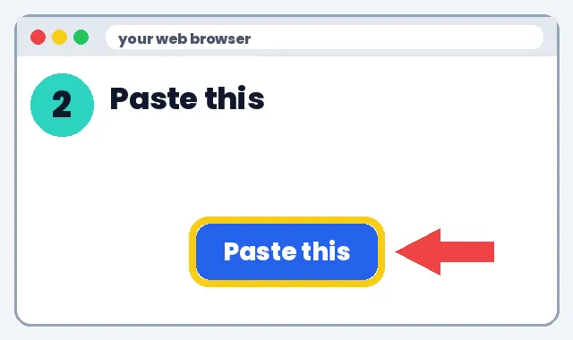
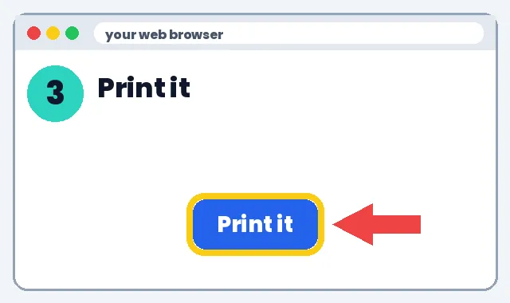
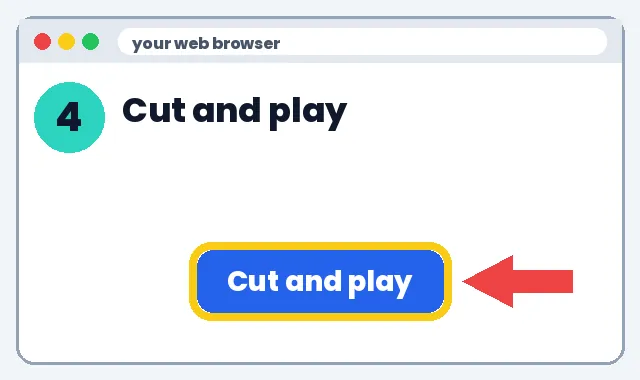

✂️ How to Teach AI Without Screens
AI does the prep. Kids work with paper, hands and voices.
1️⃣ What it can do
🃏Task cards
🧩Scavenger hunts
🎭Role-play cards
🎤Class songs
2️⃣ How to make it
👉 Show me the steps
1
Open the AI website
Go to gemini.google.com.

2
Paste this
Click the box. Paste. Press Enter.
Copy thisMake 12 printable task cards on [topic] for grade [x], one question per card, with an answer key on a separate page.

3
Print it
Click the three dots. Click Export to Docs. Print.

4
Cut and play
Cut out the cards. Kids play with no screens.

🎉 You did it! Great job.
3️⃣ What to do next
Pick one link below and try it this week. Start small: one tool, one lesson, 10 minutes.
Learn more
- 🃏 Printed task cards & flashcards
- 🧩 Scavenger hunts & escape-room clues
- 🎭 Role-play & debate cards
- 🎤 Sing the lesson song together
- 📝 Paper exit tickets
Task cardsMake 12 printable task cards on [topic] for grade [x], one question per card, with an answer key on a separate page.
Scavenger huntMake a 6-clue classroom scavenger hunt about [topic]. Each clue answers a question that points to the next spot.
📚 More screen-free activities
No tech experience needed. We'll show you every click.
Learn more
Teacher preps with AI, kids learn offline
1️⃣ What it can do
- Debate cards, escape-room clues, role-play scripts, sorting games, and printed reading passages.
- Works when devices aren't allowed or tools are blocked.
2️⃣ How to make it
- At home or on an approved tool, paste one prompt below.
- Check every answer.
- Paste into Google Docs or Word, or Canva for nicer layout.
- Click File → Print.
- Cut, laminate if you like, and teach.
Escape roomMake a 5-puzzle paper escape room on [topic] for grade [x]. Each answer gives a code for the next puzzle. Include an answer key.
Role-playWrite 4 short role-play cards about [historical event/topic] for grade [x], each with a character, goal and 2 lines to start.
Sorting gameMake a card-sorting activity for [topic], grade [x]: 3 categories, 12 cards, answer key.
3️⃣ What to do next
💰 Save money: discounts
- Khan Academy: Free lessons and practice
- Khan Academy Kids: Free learning app for ages 2-8
- PBS KIDS for Parents: Free tips and activities
- PBS KIDS: Free games and videos for young kids
- Libby (library app): Free e-books and audiobooks with a library card
See all deals for teachers & parents
Deals change, check the site. No affiliate links: we earn nothing from these.